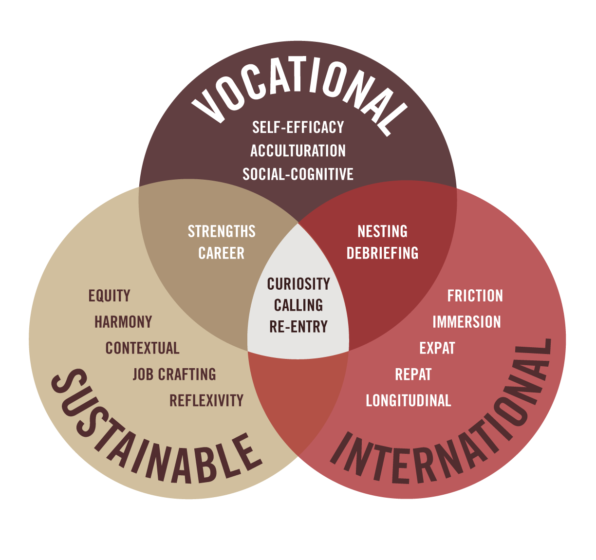

Research vertical teams at Seattle Pacific University are the “research teams” or “labs” in the Clinical and Industrial/Organizational Psychology doctoral programs. Consistent with our mentor match approach to admitting doctoral students (i.e,. faculty commonly admit two doctoral students, each, per year, whose research and practice interests are similar to their own) the “V” reflects the peer-mentoring/support provided by older cohort members.
The BikosRVT includes the doctoral advisees of Lynette Bikos, PhD, ABPP. On average, Dr Bikos admits two doctoral students per year. Her team includes students from both the Clinical and Industrial/Organizational Psychology programs. In a typical year there are about 12 students on campus and on the team and another two students on their pre-doctoral internship. Although the training models of the doctoral programs are scientist-practitioner in nature, the approach of the RVT is scientist-practitioner-advocacy.
Research in the Bikos RVT falls at the intersections of vocational, global, and sustainable psychology. Please explore these pages to learn about (a) how RVTs function at Seattle Pacific Universities, (b) RVT projects that are in progress, (c) opportunities for professional service and engagement in the profession, (d) the fun ways we support each other in the program, and (e) about Dr. Bikos and her approaches to teaching/advising, research, and practice.
